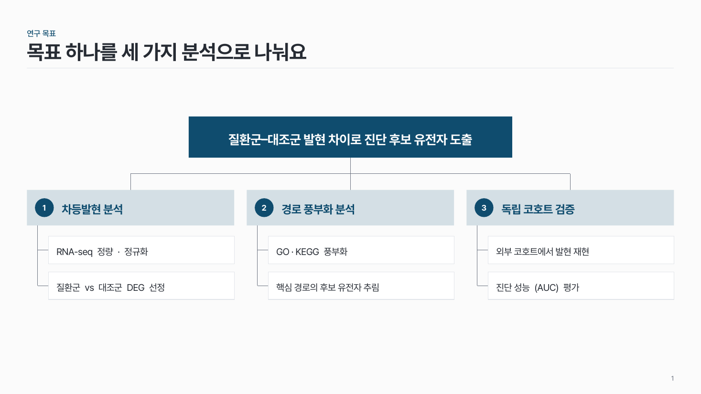
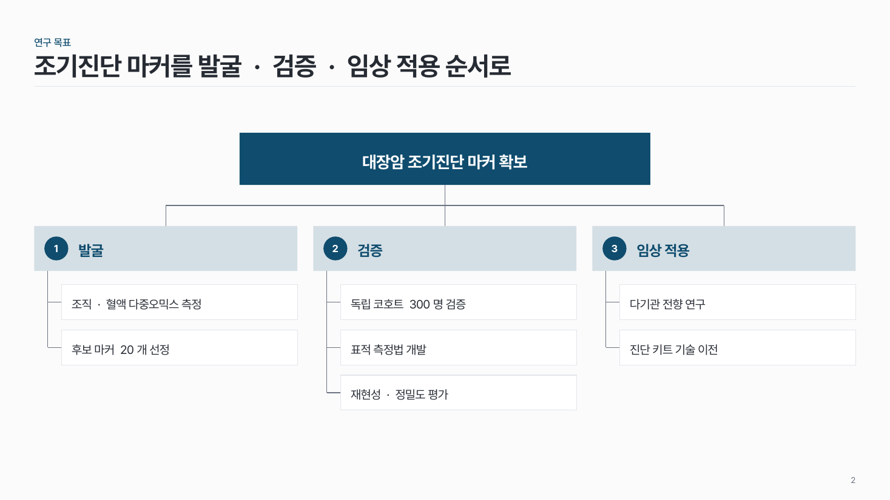

목표 트리 logic-04
맨 위 목표 하나에서 전략 2–3개로, 전략마다 세부 과제 2–3개로 꺾은선을 내려요.

이 시안
목표 → 전략 3 → 과제 2씩
슬라이드 제목: 목표 하나를 세 가지 분석으로 나눠요
언제 쓰나
연구 목표 하나를 전략으로 나누고 전략마다 세부 과제를 붙여 보여 줄 때요. 과제 계획서에서 상위 목표와 실행 항목의 연결을 한 장에 보여 줄 때 맞아요.
구성
- 맨 위 가운데에 최종 목표 칸 (진한 색).
- 아래에 전략 칸 2–3개를 같은 높이로 나란히, 번호 원.
- 전략마다 아래에 세부 과제 칸을 세로로.
- 목표–전략, 전략–과제를 얇은 회색 꺾은선으로.
지킬 것
- 목표는 1개, 두 줄(40자) 이내.
- 전략은 2–3개, 이름 15자 이내. 전략마다 과제 2–3개, 과제 20자 이내.
- 진한 색은 목표 칸 한 곳, 전략은 옅은 면.
하지 말 것
- 한 전략만 과제를 길게 늘이지 않아요.
- 연결선 끝마다 화살촉을 달지 않아요.
- 과제 칸에 설명 문단을 넣지 않아요.
시안 비교
같은 내용을 옵션만 바꿔 그렸어요. 그림을 누르면 크게 보여요.
A목표 → 전략 3 → 과제 2씩
슬라이드 제목: 목표 하나를 세 가지 분석으로 나눠요

B과제 수가 다른 트리 (2 · 3 · 2)
슬라이드 제목: 조기진단 마커를 발굴 · 검증 · 임상 적용 순서로